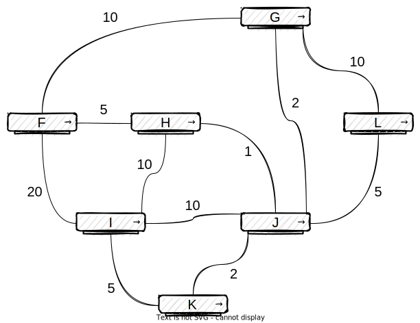

Thème 3 - Architecture matérielle⚓︎
| BAC | Protocole de Routage |
|---|
Exercices BAC⚓︎
Sujet n°1 : sujet zéro⚓︎
Sujet zéro
On considère un réseau composé de plusieurs routeurs reliés de la façon suivante :

➡ Le protocole RIP⚓︎
Le protocole RIP permet de construire les tables de routage des différents routeurs, en indiquant pour chaque routeur la distance, en nombre de sauts, qui le sépare d’un autre routeur. Pour le réseau ci-dessus, on dispose des tables de routage suivantes :


Question 1
- Le routeur A doit transmettre un message au routeur G, en effectuant un nombre minimal de sauts. Déterminer le trajet parcouru.
- Déterminer une table de routage possible pour le routeur G obtenu à l’aide du protocole RIP.
Question 2
Le routeur C tombe en panne. Reconstruire la table de routage du routeur A en suivant le protocole RIP.
➡ Le protocole OSPF⚓︎
Contrairement au protocole RIP, l’objectif n’est plus de minimiser le nombre de routeurs traversés par un paquet. La notion de distance utilisée dans le protocole OSPF est uniquement liée aux coûts des liaisons.
L’objectif est alors de minimiser la somme des coûts des liaisons traversées.
Le coût d’une liaison est donné par la formule suivante :
\(coût = \dfrac{10^8}{d}\)
où \(d\) est la bande passante en bits/s entre les deux routeurs.
On a rajouté sur le graphe représentant le réseau précédent les différents débits des liaisons.
On rappelle que 1 Gb/s = 1 000 Mb/s = \(10^9\) bits/s.

Question 3
- Vérifier que le coût de la liaison entre les routeurs A et B est 0,01.
- La liaison entre le routeur B et D a un coût de 5. Quel est le débit de cette liaison ?
Question 4
Le routeur A doit transmettre un message au routeur G, en empruntant le chemin dont la somme des coûts sera la plus petite possible. Déterminer le chemin parcouru. On indiquera le raisonnement utilisé.
Sujet n°2⚓︎
Exo
Cet exercice porte sur les réseaux et les protocoles de routage.
On représente ci-dessous un réseau dans lequel R1, R2, R3, R4, R5 et R6 sont des routeurs. Le réseau local L1 est relié au routeur R1 et le réseau local L2 au routeur R6.

Rappels et notations
Dans cet exercice, les adresses IP sont composées de 4 octets, soit 32 bits. Elles sont notées X1.X2.X3.X4, où X1, X2, X3 et X4 sont les valeurs des 4 octets, convertis en notation décimale.
La notation X1.X2.X3.X4/n signifie que les n premiers bits de poids forts de l’adresse IP représentent la partie « réseau », les bits suivants représentent la partie « hôte ».
Toutes les adresses des hôtes connectés à un réseau local ont la même partie réseau et peuvent donc communiquer directement. L’adresse IP dont tous les bits de la partie « hôte » sont à 0 est appelée « adresse du réseau ».
On donne également des extraits de la table de routage des routeurs R1 à R5 dans le tableau suivant :
| Routeur | Réseau destinataire | Passerelle | Interface |
|---|---|---|---|
| R1 | 54.37.122.0/24 | 86.154.10.1 | 86.154.10.56 |
| R2 | 54.37.122.0/24 | 37.49.236.22 | 37.49.236.23 |
| R3 | 54.37.122.0/24 | 62.34.2.8 | 62.34.2.9 |
| R4 | 54.37.122.0/24 | 94.23.122.10 | 94.23.122.11 |
| R5 | 54.37.122.0/24 | 218.32.15.1 | 218.32.15.2 |
Question 1
Un paquet part du réseau local L1 à destination du réseau local L2.
a. En utilisant l’extrait de la table de routage de R1, vers quel routeur R1 envoie-t-il ce paquet : R2 ou R3 ? Justifier.
b. A l’aide des extraits de tables de routage ci-dessus, nommer les routeurs traversés par ce paquet, lorsqu’il va du réseau L1 au réseau L2.
Question 2
La liaison entre R1 et R2 est rompue.
a. Sachant que ce réseau utilise le protocole RIP (distance en nombre de sauts), donner l’un des deux chemins possibles que pourra suivre un paquet allant de L1 vers L2.
b. Dans les extraits de tables de routage ci-dessus, pour le chemin de la question 2.a, quelle(s) ligne(s) sera (seront) modifiée(s) ?
Question 3
On a rétabli la liaison entre R1 et R2.
Par ailleurs, pour tenir compte du débit des liaisons, on décide d’utiliser le protocole OSPF (distance liée au coût minimal des liaisons) pour effectuer le routage. Le coût des liaisons entre les routeurs est donné par le tableau suivant :
| Liaison | R1-R2 | R1-R3 | R2-R3 | R2-R4 | R2-R5 | R2-R6 | R3-R4 | R4-R5 | R4-R6 | R5-R6 |
|---|---|---|---|---|---|---|---|---|---|---|
| Coût | 100 | 100 | ? | 1 | 10 | 10 | 10 | 1 | 10 | 1 |
a. Le coût \(C\) d'une liaison est donné ici par la formule ଽ
\(C=\dfrac{10^9}{BP}\)
où \(BP\) est la bande passante de la connexion en bps (bit par seconde).
Sachant que la bande passante de la liaison R2-R3 est de 10 Mbps, calculer le coût correspondant.
b. Déterminer le chemin parcouru par un paquet partant du réseau L1 et arrivant au réseau L2, en utilisant le protocole OSPF.
c. Indiquer pour quel(s) routeur(s) l’extrait de la table de routage sera modifié pour un paquet à destination de L2, avec la métrique OSPF.
Annexe

Sujet n°3 : 2022, Métropole, J2⚓︎
D'après 2022, Métropole, J2, Ex. 3
Rappels :
Une adresse IPv4 est composée de 4 octets, soit 32 bits. Elle est notée a.b.c.d, où a, b, c et d sont les valeurs des 4 octets.
La notation a.b.c.d/n signifie que les n premiers bits de l'adresse IP représentent la partie « réseau », les bits qui suivent représentent la partie « machine ».
L'adresse IPv4 dont tous les bits de la partie « machine » sont à 0 est appelée « adresse du réseau ».
L'adresse IPv4 dont tous les bits de la partie « machine » sont à 1 est appelée « adresse de diffusion ».
On considère le réseau représenté sur la ci-dessous :


Question 1
On considère la machine d'adresse IPv4 192.168.1.1.
1.a. Donner l'adresse du réseau sur lequel se trouve cette machine.
1.b. Donner l'adresse de diffusion (broadcast) de ce réseau.
1.c. Donner le nombre maximal de machines que l'on peut connecter sur ce réseau.
1.d. On souhaite ajouter une machine sur ce réseau, proposer une adresse IPv4 possible pour cette machine.
Question 2
La machine d'adresse IPv4 192.168.1.1 transmet un paquet IPv4 à la machine d'adresse IPv4 192.168.4.2.
2.a. Donner toutes les routes pouvant être empruntées par ce paquet IPv4, chaque routeur ne pouvant être traversé qu'une seule fois.
2.b. Expliquer l'utilité d'avoir plusieurs routes possibles reliant les réseaux 192.168.1.0/24 et 192.168.4.0/24.
Question 3
Dans cette question, on suppose que le protocole de routage mis en place dans le réseau est RIP. Ce protocole consiste à minimiser le nombre de sauts.
Le schéma du réseau est celui de la figure ci-dessus.
Les tables de routage utilisées sont données ci-dessous :
| Destination | passe par |
|---|---|
| B | ... |
| C | ... |
| D | E |
| E | ... |
| F | C |
| Destination | passe par |
|---|---|
| A | A |
| C | C |
| D | C |
| E | C |
| F | C |
| Destination | passe par |
|---|---|
| A | A |
| B | B |
| D | E |
| E | E |
| F | F |
| Destination | passe par |
|---|---|
| A | E |
| B | F |
| C | F |
| E | E |
| F | F |
| Destination | passe par |
|---|---|
| A | A |
| B | C |
| C | C |
| D | D |
| F | C |
| Destination | passe par |
|---|---|
| A | C |
| B | C |
| C | C |
| D | D |
| E | C |
3.a. Recopier et compléter sur la copie la table de routage du routeur A.
3.b. Un paquet IP doit aller du routeur B au routeur D. En utilisant les tables de routage, donner le parcours emprunté par celui-ci.
3.c. Les connexions entre les routeurs B-C et A-E étant coupées, sur la copie, réécrire les tables de routage des routeurs A, B et C.
3.d. Déterminer le nouveau parcours emprunté par le paquet IP pour aller du routeur B au routeur D.
Question 4
Dans cette question, on suppose que le protocole de routage mis en place dans le réseau est OSPF. Ce protocole consiste à minimiser la somme des coûts des liaisons empruntées.
Le coût d'une liaison est défini par la relation \(\mathrm{coût} = \frac{10^8}{d}\) où \(d\) représente le débit en \(\mathrm{bit}/\mathrm{s}\) et \(\mathrm{coût}\) est sans unité. Le schéma du réseau reste celui du début de l'exercice.
4.a. Déterminer le coût des liaisons Ethernet (\(d = 10^7\,\mathrm{bit}/\mathrm{s}\)), Fast-Ethernet (\(d = 10^8\,\mathrm{bit}/\mathrm{s}\)) et Fibre (\(d = 10^9\,\mathrm{bit}/\mathrm{s}\)).
4.b. On veut représenter schématiquement le réseau de routeurs à partir du schéma du réseau.
Recopier sur la copie le schéma ci-dessous et tracer les liaisons entre les routeurs en y indiquant leur coût.
graph LR
A[(A)] --- B[(B)]
A --- C[(C)]
A --- E[(E)]
B --- C
C --- E
E --- D[(D)]
D --- F[(F)]
C --- F
linkStyle 0 stroke-width:0;
linkStyle 1 stroke-width:0;
linkStyle 2 stroke-width:0;
linkStyle 3 stroke-width:0;
linkStyle 4 stroke-width:0;
linkStyle 5 stroke-width:0;
linkStyle 6 stroke-width:0;
linkStyle 7 stroke-width:0;4.c. Un paquet IPv4 doit être acheminé d'une machine ayant pour adresse IPv4 192.168.2.1 à une machine ayant pour adresse IPv4 192.168.4.1.
Écrire les routes possibles, c'est à dire la liste des routeurs traversés, et le coût de chacune de ces routes, chaque routeur ne pouvant être traversé qu'une seule fois.
4.d. Donner, en la justifiant, la route qui sera empruntée par un paquet IPv4 pour aller d'une machine ayant pour adresse IPv4 192.168.2.1 à une machine ayant pour adresse IPv4 192.168.4.1.
Sujet n°4 : 2022, Métropole, J1⚓︎
: D'après 2022, Métropole J1
Question 1
Une adresse IPv4 est représentée sous la forme de 4 nombres entiers positifs séparés par des points. Chacun de ces 4 entiers peut être représenté sur un octet.
1.a. Donner en écriture décimale l'adresse IPv4 correspondant à l'écriture binaire : 11000000.10101000.10000000.10000011
1.b Tous les ordinateurs du réseau A ont une adresse IPv4 de la forme : 192.168.128.___, où seul le dernier octet (représenté par ___ ) diffère.
Donner le nombre d'adresses différentes possibles du réseau A.
Question 2
On rappelle que le protocole RIP cherche à minimiser le nombre de routeurs traversés (qui correspond à la métrique). On donne les tables de routage d'un réseau informatique composé de 5 routeurs (appelés A, B, C, D et E), chacun associé directement à un réseau du même nom, obtenues avec le protocole RIP :
| Destination | Métrique |
|---|---|
| A | 0 |
| B | 1 |
| C | 1 |
| D | 1 |
| E | 2 |
| Destination | Métrique |
|---|---|
| A | 1 |
| B | 0 |
| C | 2 |
| D | 1 |
| E | 2 |
| Destination | Métrique |
|---|---|
| A | 1 |
| B | 2 |
| C | 0 |
| D | 1 |
| E | 2 |
| Destination | Métrique |
|---|---|
| A | 1 |
| B | 1 |
| C | 1 |
| D | 0 |
| E | 1 |
| Destination | Métrique |
|---|---|
| A | 2 |
| B | 2 |
| C | 2 |
| D | 1 |
| E | 0 |
2.a. Donner la liste des routeurs avec lesquels le routeur A est directement relié.
2.b. Représenter graphiquement et de manière sommaire les 5 routeurs ainsi que les liaisons existantes entre ceux-ci.
Question 3
Le protocole OSPF est un protocole de routage qui cherche à minimiser la somme des métriques des liaisons entre routeurs.
Dans le protocole de routage OSPF le débit des liaisons entre routeurs agit sur la métrique via la relation : \(\text{métrique} = \dfrac{10^8}{\text{débit}}\) dans laquelle le débit est exprimé en bit par seconde (\(\text{bps}\)).
On rappelle qu'un \(\text{kbps}\) est égal à \(10^3~\text{bps}\) et qu'un \(\text{Mbps}\) est égal à \(10^6~\text{bps}\).
Recopier sur votre copie et compléter le tableau suivant :
| Débit | \(100~\text{kbps}\) | \(500~\text{kbps}\) | ... | \(100~\text{Mbps}\) |
| Métrique associée | \(1000\) | ... | \(10\) | \(1\) |
Question 4
Voici la représentation d'un réseau et la table de routage incomplète du routeur F obtenue avec le protocole OSPF :

Routeur F
| Destination | Métrique |
|---|---|
| F | 0 |
| G | 8 |
| H | 5 |
| I | |
| J | |
| K | |
| L |
Les nombres présents sur les liaisons représentent les coûts des routes avec le protocole OSPF.
4.a. Indiquer le chemin emprunté par un message d'un ordinateur du réseau F à destination d'un ordinateur du réseau I. Justifier votre réponse.
4.b. Recopier et compléter la table de routage du routeur F.
4.c. Citer une unique panne qui suffirait à ce que toutes les données des échanges de tout autre réseau à destination du réseau F transitent par le routeur G. Expliquer en détail votre réponse.